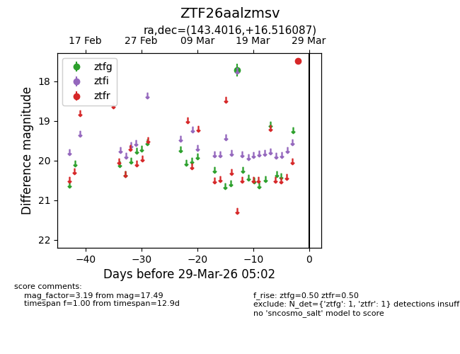
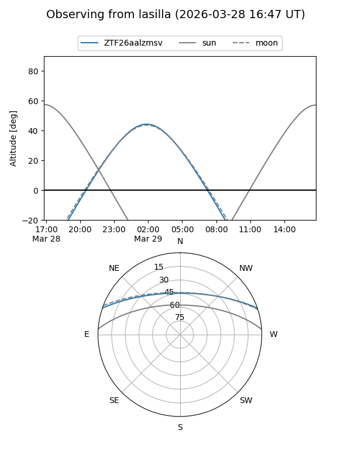
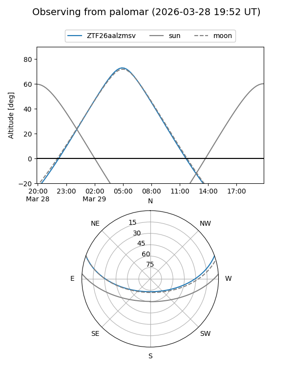

ZTF26aalzmsv
Target ZTF26aalzmsv at 2026-03-29 05:05
Aliases and brokers:
FINK: link
Lasair: link
ALeRCE: link
alt names
ZTF26aalzmsv (ztf,fink_ztf)
Coordinates:
equatorial (ra, dec) = 143.4016,+16.51609
equatorial (HMS+DMS) = 09:33:36.37,+16:30:57.91
galactic (l, b) = (215.3804,+43.17730)
Flags:
Photometry:
last ztfg=17.72, ztfr=17.49
1 ztfg, 1 ztfr detections
Lightcurve

Visibility


Additional plots